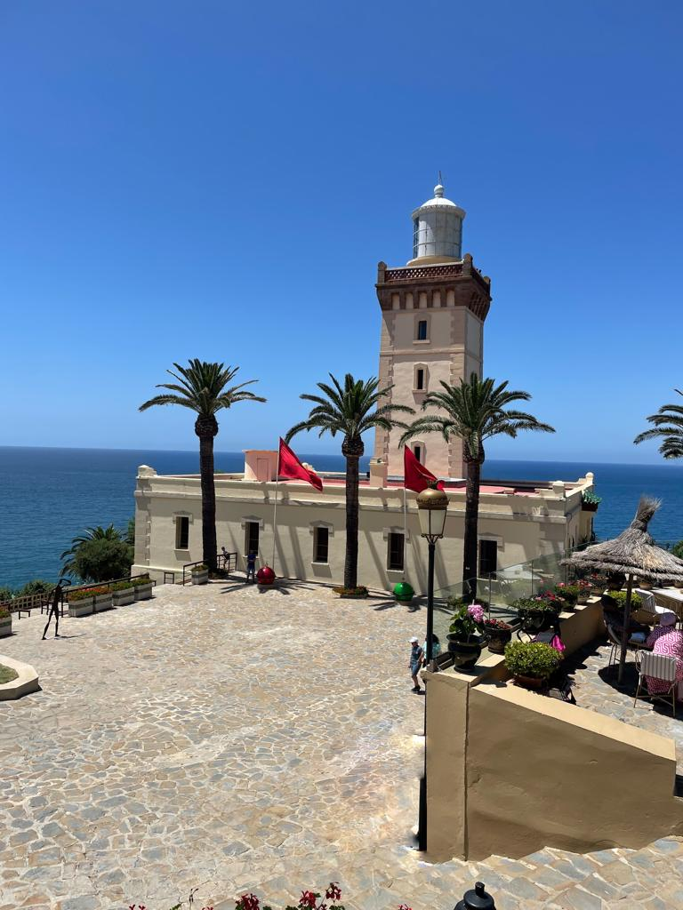
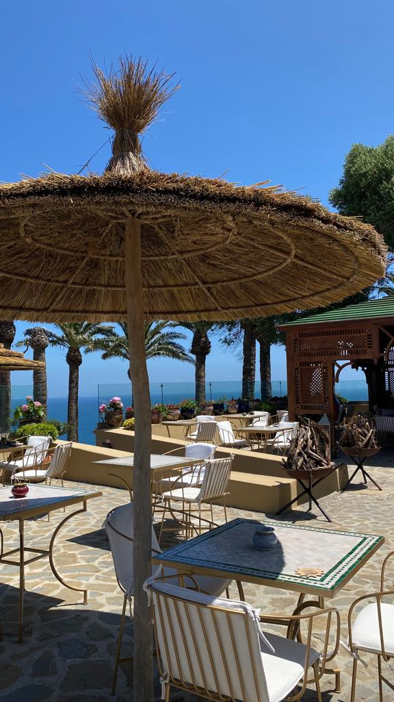
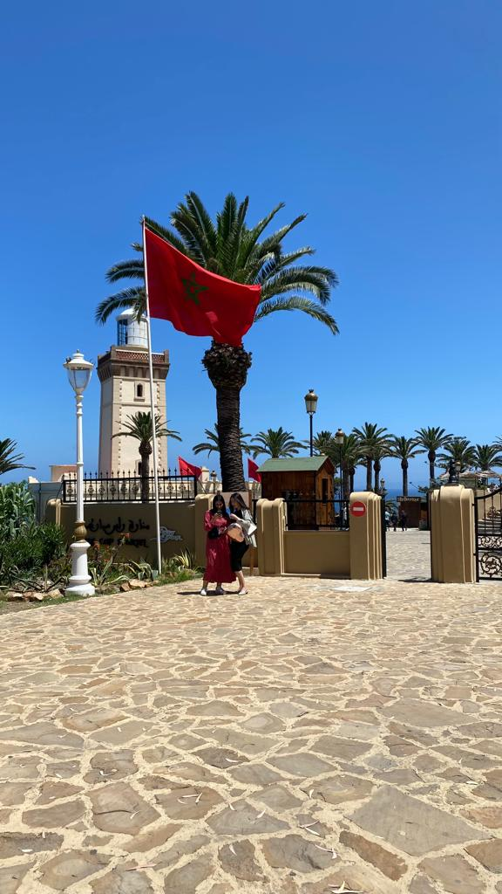
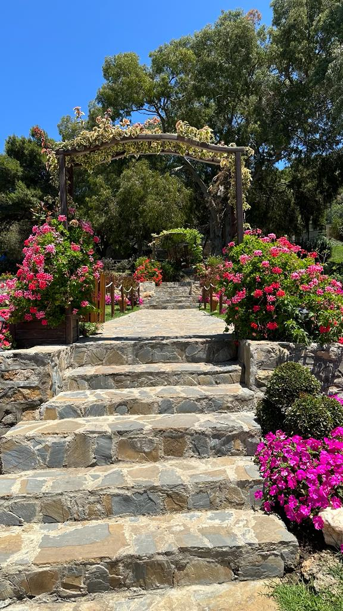
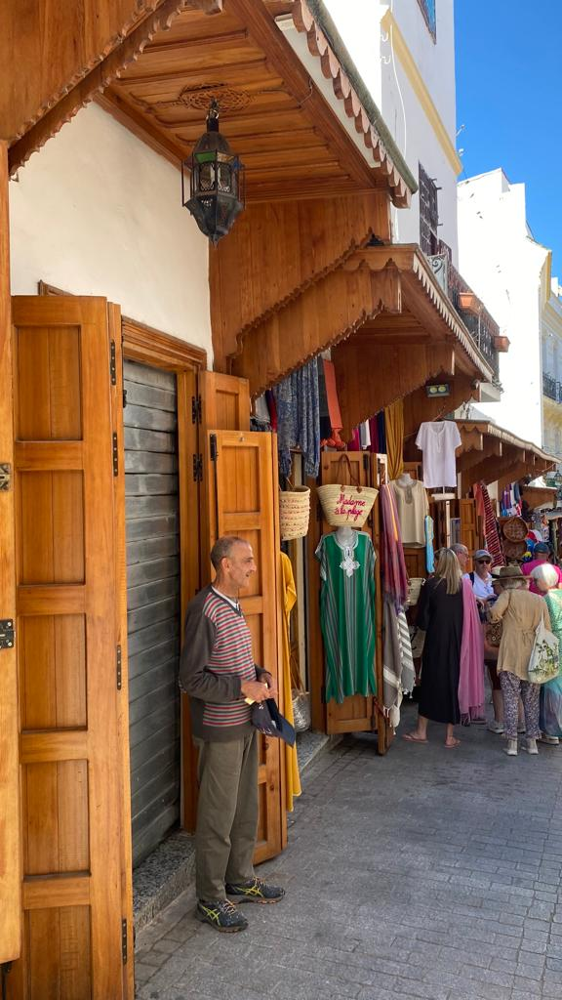

Bedankt voor het bezoeken van mijn website! Ik ben Aya Bougafer, geboren in Amsterdam maar mijn hart ligt in het betoverende Tanger. Als jaarlijkse bezoeker en inwoner van deze stad, deel ik hier mijn passie voor ontdekken. Verken met mij de verborgen schatten van Tanger, of je nu lokaal bent of een reiziger. Ontdek waardevolle tips en spannende activiteiten. Laten we samen de schoonheid en diversiteit van onze stad ervaren en nieuwe herinneringen creëren. Geniet van mijn website en ontdek wat Tanger zo bijzonder maakt!
COLLAGE




